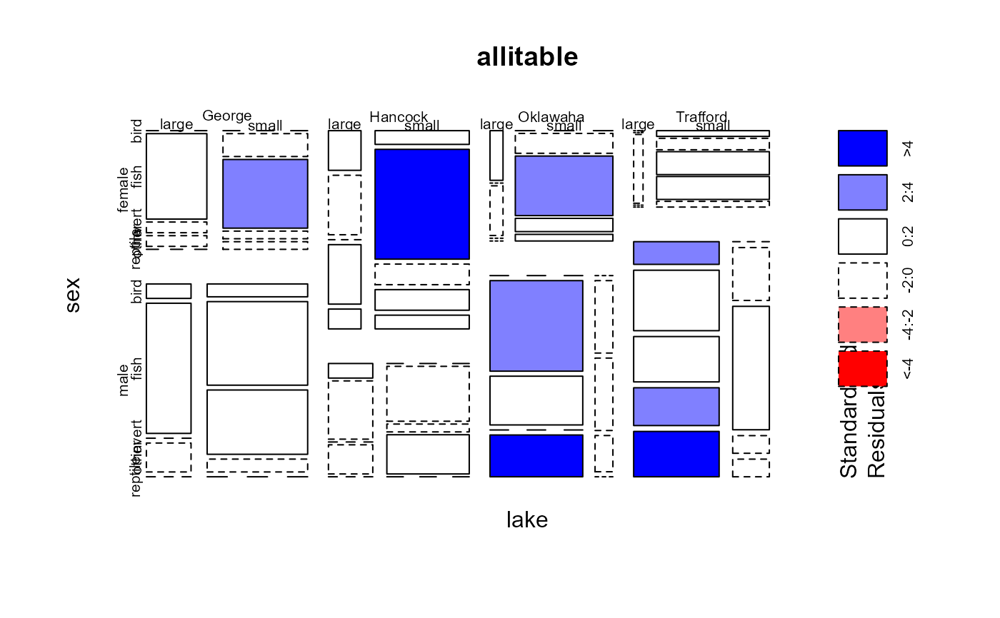

Alligator Food Choice
Alligator.RdThe Alligator data, from Agresti (2002), comes from a study of the primary food choices of alligators in four Florida lakes. Researchers classified the stomach contents of 219 captured alligators into five categories: Fish (the most common primary food choice), Invertebrate (snails, insects, crayfish, etc.), Reptile (turtles, alligators), Bird, and Other (amphibians, plants, household pets, stones, and other debris).
Usage
data(Alligator)Format
A frequency data frame with 80 observations on the following 5 variables.
lakea factor with levels
GeorgeHancockOklawahaTraffordsexa factor with levels
femalemalesizealligator size, a factor with levels
large(>2.3m)small(<=2.3m)foodprimary food choice, a factor with levels
birdfishinvertotherreptilecountcell frequency, a numeric vector
Details
The table contains a fair number of 0 counts.
food is the response variable. fish is the most frequent choice, and often
taken as a baseline category in multinomial response models.
Examples
data(Alligator)
# change from frequency data.frame to table
allitable <- xtabs(count ~ lake + sex + size + food, data=Alligator)
# Agresti's Table 7.1
structable(food ~ lake + sex + size, allitable)
#> food bird fish invert other reptile
#> lake sex size
#> George female large 0 8 1 1 0
#> small 0 3 9 1 1
#> male large 1 9 0 2 0
#> small 2 13 10 2 0
#> Hancock female large 2 3 0 3 1
#> small 2 16 3 3 2
#> male large 1 4 0 2 0
#> small 0 7 1 5 0
#> Oklawaha female large 1 0 1 0 0
#> small 0 3 9 2 1
#> male large 0 13 7 0 6
#> small 0 2 2 1 0
#> Trafford female large 0 0 1 0 0
#> small 1 2 4 4 1
#> male large 3 8 6 5 6
#> small 0 3 7 1 1
plot(allitable, shade=TRUE)

# mutual independence model
mosaic(~ food + lake + size, allitable, shade=TRUE)
# food jointly independent of lake and size
mosaic(~ food + lake + size, allitable, shade=TRUE,
expected = ~lake:size + food)
if (require(nnet)) {
# multinomial logit model
mod1 <- multinom(food ~ lake + size + sex, data=Alligator, weights=count)
}
#> Loading required package: nnet
#> # weights: 35 (24 variable)
#> initial value 352.466903
#> iter 10 value 270.397070
#> iter 20 value 268.958046
#> final value 268.932740
#> converged